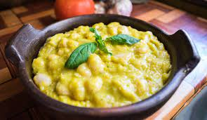

Porotos con Mazamorra

Porotos hechos en mazamorra con agregado de sofrito
Receta de Porotos hechos en mazamorra de choclo, acompañado de sofrito de cebolla y pimentones
Ingredientes
- Porotos graneados
- Mazamora
- Sofrito
Pasos
- Sofreir las Verduras en una olla
- Agregar los porotos
- Agregar la Mazamorra y 4 tazas de agua
- Agregar condimentos a gusto
- Cocinar en olla a presion durante 20 minutos